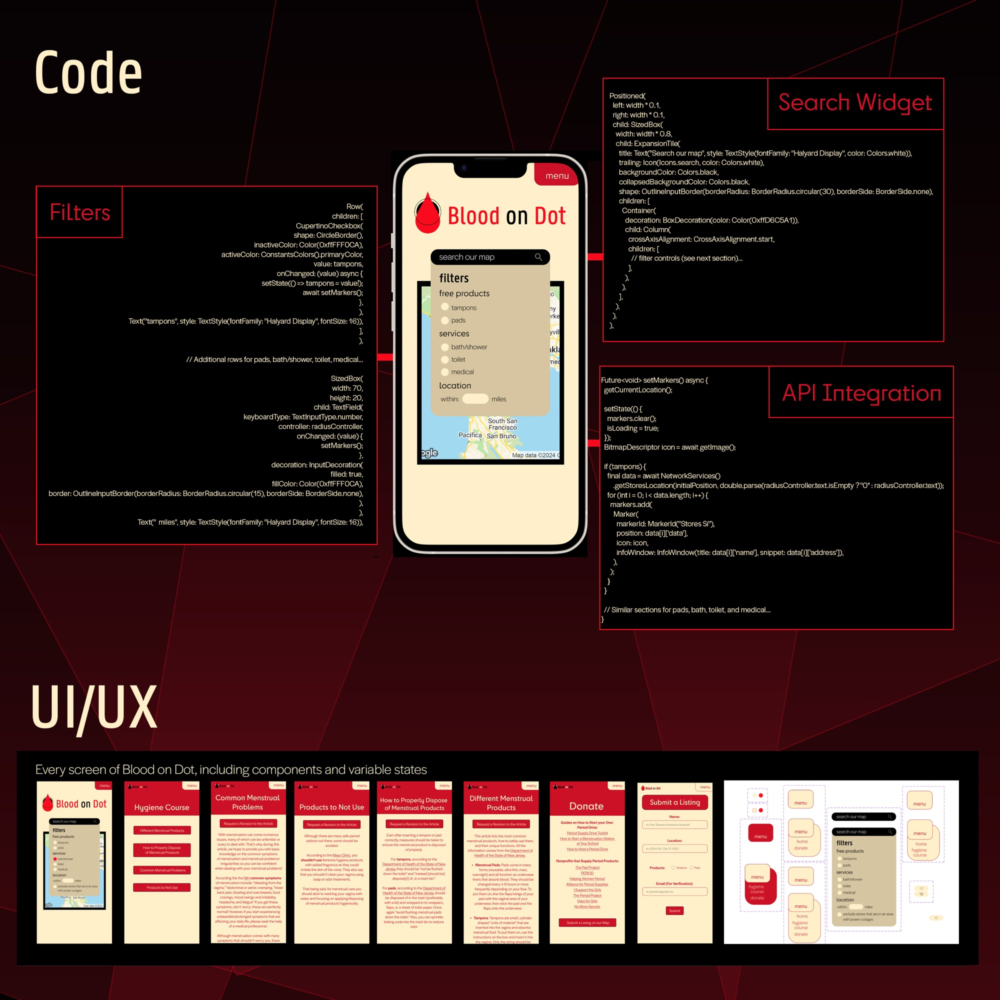
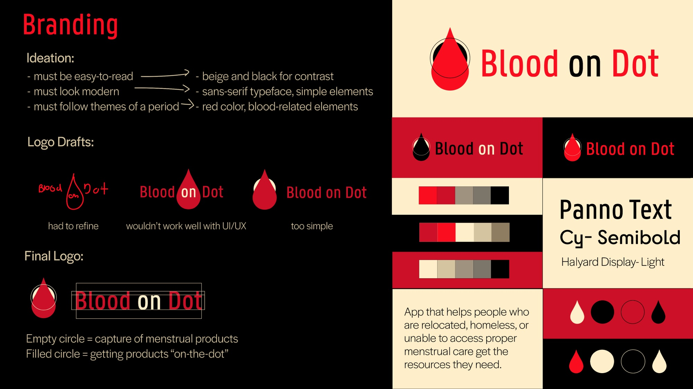

Blood on Dot: Period Poverty App — UI/UX, Branding, Front End Programming
Software used: Figma, Adobe Illustrator, Node.js, Swift, JavaScript
Blood on Dot is an app where you can search for nonprofits, individual-led events, public showers, public restrooms, and other places with free period/period-related products. You can also add an event to be added to the map after details are verified about it to ensure safety. Additionally, there is short educational course on menstrual hygiene.

Figma File Link: https://www.figma.com/design/b9Qen8Je0CEkQHj1x0kXWG/bloodondot?node-id=0-1&p=f
Process

